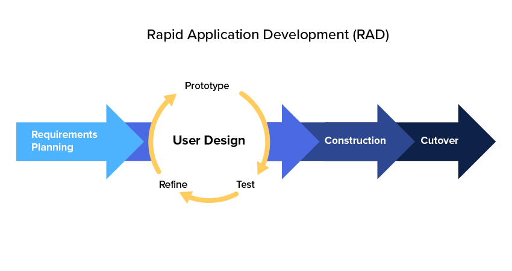

Primarily, our studio provides RAD services. We can take your project from a game design document (or even just a rough concept) and turn it into a visual playable experience to test with user feedback. We do this in quick 2 week iterations where you can provide feedback at designated milestones. Then do quick iterations upon the prototypes until you're satisfied with your proof of concept.

We are also licenced to port games to the full range of game consoles such as Nintendo Switch, Xbox One, Xbox X, Wii[U], PlayStation 4, PlayStation 5, and more! Only for games made in the Unity3D, Unreal 4, or Godot game engines.

Depending on the project, we are also available to continue supporting prototypes onwards into a full development lifecycle to completion. Please contact us for more information and inquiry.